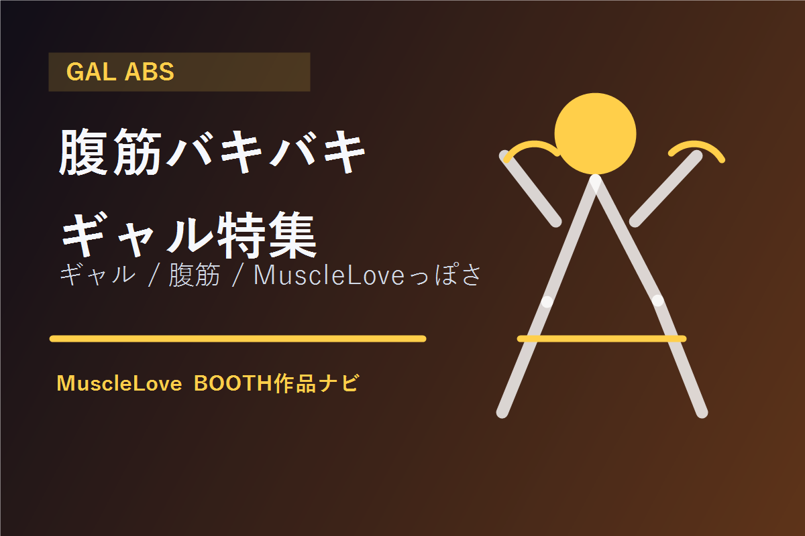

腹筋バキバキのギャルAI CG集
腹筋バキバキのギャルが好きなら、まず見るべきポイントは腹筋、ワキ、表情、シチュエーションです。筋肉だけじゃなく、ギャルの強気な雰囲気が大事ですね。

MuscleLoveっぽい方向性
ただのグラビアではなく、「電車でバレる」「ジムで出会う」「エアコンが壊れた部屋」みたいな、ちょっと変な日常シチュエーションを足すのがMuscleLoveらしさです。
腹筋バキバキのギャルが好きなら、まず見るべきポイントは腹筋、ワキ、表情、シチュエーションです。筋肉だけじゃなく、ギャルの強気な雰囲気が大事ですね。

ただのグラビアではなく、「電車でバレる」「ジムで出会う」「エアコンが壊れた部屋」みたいな、ちょっと変な日常シチュエーションを足すのがMuscleLoveらしさです。